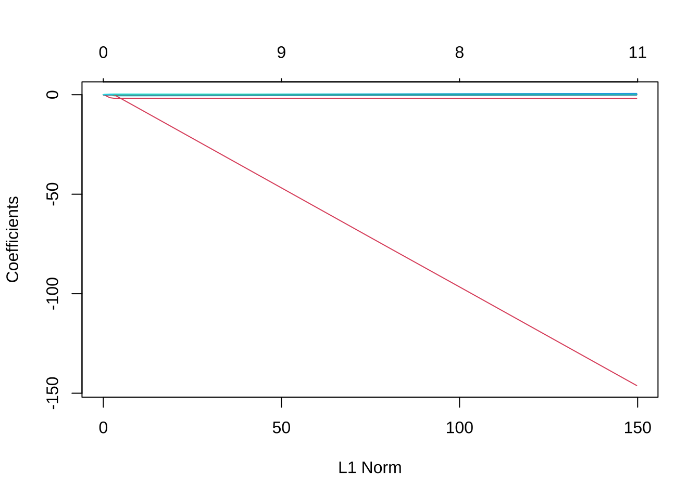

6 正則化回帰 (lasso, ridge回帰, elastic net)
本章では, Rパッケージglmnetを使用する. 同パッケージは, Lasso（Least Absolute Shrinkage and Selection Operator） やその拡張 (Elastic Net等) の理論研究や応用を推進した Jerome Friedman, Trevor Hastie, Robert Tibshirani らによって開発され, 維持されている.
glmnetに関する有用情報マニュアル, 解説ページ: - https://glmnet.stanford.edu/articles/glmnet.html. - https://cran.r-project.org/web/packages/glmnet/vignettes/glmnet.pdf
※ 本セクションにおける分析フローは, 主としてISLR, Ch.6を参考にした.
6.1 検証用セット法による回帰モデルの予測精度評価
データセット1: ワイン品質データ
- winequality-white.csv
- fixed acidity: 酢酸濃度
- volitle acidity: 揮発酸濃度
- citric acidity: クエン酸濃度
- chlorides: 塩化物
- sulfur dioxide: 二酸化硫黄
- sulphate: 硫酸塩
- fixed acidity: 酒石酸含有量（g/dm3)
- volatile acidity: 酢酸含有量（g/dm3)
- citric acid: クエン酸含有量（g/dm3)
- residual sugar: 残留糖分含有量（g/dm3）
- chlorides: 塩化ナトリウム含有量（g/dm3)
- free sulfur dioxide: 遊離亜硫酸含有量（mg/dm3）
- total sulfur dioxide: 総亜硫酸含有量（mg/dm3）
- density: 密度（g/dm3)
- pH: pH
- sulphates: 硫酸カリウム含有量（g/dm3）
- alcohol: アルコール度数（% vol.）
- quality: ワインの品質 (0 (very bad) -- 10 (excellent))wine <- read.csv("winequality-white.csv", sep = ";", skip = 1, header = T)
head(wine)
#> fixed.acidity volatile.acidity citric.acid residual.sugar chlorides
#> 1 7.0 0.27 0.36 20.7 0.045
#> 2 6.3 0.30 0.34 1.6 0.049
#> 3 8.1 0.28 0.40 6.9 0.050
#> 4 7.2 0.23 0.32 8.5 0.058
#> 5 7.2 0.23 0.32 8.5 0.058
#> 6 8.1 0.28 0.40 6.9 0.050
#> free.sulfur.dioxide total.sulfur.dioxide density pH sulphates alcohol
#> 1 45 170 1.0010 3.00 0.45 8.8
#> 2 14 132 0.9940 3.30 0.49 9.5
#> 3 30 97 0.9951 3.26 0.44 10.1
#> 4 47 186 0.9956 3.19 0.40 9.9
#> 5 47 186 0.9956 3.19 0.40 9.9
#> 6 30 97 0.9951 3.26 0.44 10.1
#> quality
#> 1 6
#> 2 6
#> 3 6
#> 4 6
#> 5 6
#> 6 6- 検証用セット法 (validation set approach)
- データセットを学習用と検証用にランダムに分割
- 学習用データセットで学習 (線形回帰モデルへの適合)
- 検証用データセットで予測
- 予測MSE (平均2乗誤差) を計算
# データセットを学習用と検証用にランダムに分割
set.seed(1)
train <- sample(1:nrow(wine), 3000)
# wine_train <- wine[train,] # 学習用データセット, 3000
# wine_test <- wine[-train,] # テスト用データセット, 1898
# 学習用データセットで学習 (線形回帰モデルへの適合)
lm_mod <- lm(quality ~ ., data = wine[train, ])
# 検証用データセットで予測
lm_pred <- predict(lm_mod, newdata = wine[-train, -12])
# 予測MSE (平均2乗誤差) の計算
mean((lm_pred - wine[-train, 12])^2)
#> [1] 0.5657141
# 回帰結果
summary(lm_mod)
#>
#> Call:
#> lm(formula = quality ~ ., data = wine[train, ])
#>
#> Residuals:
#> Min 1Q Median 3Q Max
#> -3.2676 -0.4885 -0.0412 0.4639 2.9119
#>
#> Coefficients:
#> Estimate Std. Error t value Pr(>|t|)
#> (Intercept) 1.594e+02 2.202e+01 7.236 5.84e-13 ***
#> fixed.acidity 6.054e-02 2.524e-02 2.399 0.0165 *
#> volatile.acidity -1.834e+00 1.446e-01 -12.684 < 2e-16 ***
#> citric.acid -2.951e-02 1.208e-01 -0.244 0.8070
#> residual.sugar 8.795e-02 9.123e-03 9.640 < 2e-16 ***
#> chlorides -1.260e-01 6.522e-01 -0.193 0.8468
#> free.sulfur.dioxide 4.523e-03 1.082e-03 4.181 2.98e-05 ***
#> total.sulfur.dioxide -1.199e-04 4.791e-04 -0.250 0.8024
#> density -1.596e+02 2.235e+01 -7.141 1.16e-12 ***
#> pH 6.627e-01 1.303e-01 5.085 3.90e-07 ***
#> sulphates 6.331e-01 1.285e-01 4.925 8.90e-07 ***
#> alcohol 2.002e-01 2.858e-02 7.006 3.03e-12 ***
#> ---
#> Signif. codes: 0 '***' 0.001 '**' 0.01 '*' 0.05 '.' 0.1 ' ' 1
#>
#> Residual standard error: 0.7518 on 2988 degrees of freedom
#> Multiple R-squared: 0.2953, Adjusted R-squared: 0.2927
#> F-statistic: 113.8 on 11 and 2988 DF, p-value: < 2.2e-166.2 lasso
関数glmnet()の基本操作
glmnet(): 罰則付き最尤法: GLM推定 + elastic netによる正則化
- usage: glmnet(x, y, family = c("gaussian", "binomial", "poisson", "multinomial", "cox", "mgaussian"), ...)
- 最重要パラメータ
- alpha: elastic net混合パラメータ (デフォルト=1)
- lambda: 正則化パラメータ (デフォルトは自動的に100個設定)簡便のため, glmnetに入力するため, 一旦, 特徴量行列 x と 目的変数ベクトル y を別々のオブジェクトとして用意しておく.
lassoを実行するには, glmnet()において, 引数alpha = 1と設定する.
\(\alpha\)は, lasso, ridge回帰 (後述) を包括するクラスである
elastic netのパラメータであり, 両者の正規化項の結合ウェイトを示す
(\(\alpha=1\)がlasso, \(\alpha=0\)がridge回帰に対応).
特定のlambdaの値二つに対して実行し, 結果を比較してみる.
# LASSO (alpha = 1)
# lambda = L1-penalty項
lasso_mod <- glmnet(x[train, ], y[train], alpha = 1, lambda = 0.1)
coef(lasso_mod)
#> 12 x 1 sparse Matrix of class "dgCMatrix"
#> s0
#> (Intercept) 3.5648570
#> fixed.acidity .
#> volatile.acidity -0.9333891
#> citric.acid .
#> residual.sugar .
#> chlorides .
#> free.sulfur.dioxide .
#> total.sulfur.dioxide .
#> density .
#> pH .
#> sulphates .
#> alcohol 0.2443784
#lasso_mod$beta # y切片無し
lasso_mod <- glmnet(x[train, ], y[train], alpha = 1, lambda = 0.01) # lambda小(penalty小) --> 係数 = 0少
coef(lasso_mod)
#> 12 x 1 sparse Matrix of class "dgCMatrix"
#> s0
#> (Intercept) 74.381719017
#> fixed.acidity -0.002299923
#> volatile.acidity -1.812108243
#> citric.acid .
#> residual.sugar 0.050598423
#> chlorides -0.386260201
#> free.sulfur.dioxide 0.004109954
#> total.sulfur.dioxide .
#> density -73.059537698
#> pH 0.311903370
#> sulphates 0.412510523
#> alcohol 0.284548889最初の例 (lambda=0.1), すなわち, 正則化項の係数が相対的に大きい (罰則大) 時, 回帰係数の殆どの値がゼロ (変数選択されない).
他方, 二番目の例 (lambda=0.01), すなわち, 正則化項の係数が相対的に小さい時,
多くの回帰係数の値が非ゼロとなっている.
lambdaのグリッド指定によるglmnetの一括実行
正則化パラメータ\(\lambda\)は, 数値ベクトル として関数glmnet()に与えることもできる.
すると, 各lambdaの値に対してglmnet()が個別に実行され, それらが一括して戻ってくる.
以下では, \(10^1\)から\(10^{-3}\)まで100個の点からなるグリッドを取り, 関数glmnet()に与える例である.
# lambdaのグリッド指定
# grid <- 10^seq(10, -2, length = 100) # lambda = 10^10 -- 10^(-2)
grid <- 10^seq(1, -3, length = 100) # lambda = 10^1 -- 10^(-3)
# 範囲設定されたlambaの各値に対してglmnetを実行
lasso_mod <- glmnet(x[train, ], y[train], alpha = 1, lambda = grid)
# 結果オブジェクトの大きさ (次元)
dim(coef(lasso_mod)) # 12 rows --> 説明変数+y切片, 100 columns --> lambdaの値
#> [1] 12 100
dim(lasso_mod$beta) # 11 rows --> interceptがない
#> [1] 11 100戻ってきたオブジェクトから, 個々のlambda値に対する実行結果を取り出すことができる. 以下, 50番目. 90番目のグリッド点における結果を取り出す例を示す.
# 50番目のlambdaの値
lasso_mod$lambda[50] # --> 0.1047616
#> [1] 0.1047616
# 回帰係数推定値
coef(lasso_mod)[, 50]
#> (Intercept) fixed.acidity volatile.acidity
#> 3.5943708 0.0000000 -0.8843771
#> citric.acid residual.sugar chlorides
#> 0.0000000 0.0000000 0.0000000
#> free.sulfur.dioxide total.sulfur.dioxide density
#> 0.0000000 0.0000000 0.0000000
#> pH sulphates alcohol
#> 0.0000000 0.0000000 0.2402657
lasso_mod$beta[, 50] # 代替的方法
#> fixed.acidity volatile.acidity citric.acid
#> 0.0000000 -0.8843771 0.0000000
#> residual.sugar chlorides free.sulfur.dioxide
#> 0.0000000 0.0000000 0.0000000
#> total.sulfur.dioxide density pH
#> 0.0000000 0.0000000 0.0000000
#> sulphates alcohol
#> 0.0000000 0.2402657
# 回帰係数推定値のノルムの大きさ
# sqrt(sum(coef(lasso_mod)[-1, 50]^2)) # --> L2-norm
sum(abs(coef(lasso_mod)[-1, 50])) # --> L1-norm
#> [1] 1.124643# 90番目のlambdaの値の例
lasso_mod$lambda[90] # --> 0.002535364
#> [1] 0.002535364
# 回帰係数推定値
coef(lasso_mod)[, 90]
#> (Intercept) fixed.acidity volatile.acidity
#> 1.285160e+02 2.870680e-02 -1.839954e+00
#> citric.acid residual.sugar chlorides
#> -8.511098e-03 7.470412e-02 -2.656102e-01
#> free.sulfur.dioxide total.sulfur.dioxide density
#> 4.331940e-03 -3.401243e-05 -1.280749e+02
#> pH sulphates alcohol
#> 5.201851e-01 5.621013e-01 2.323178e-01
# 回帰係数推定値のノルムの大きさ
#sqrt(sum(coef(lasso_mod)[-1, 90]^2)) # --> L2-norm
sum(abs(coef(lasso_mod)[-1, 90])) # --> L1-norm
#> [1] 131.6114lambda値大 (罰則大) → 回帰係数推定値の大きさ (L1ノルムで評価) 小, となっている
学習結果を使い, グリッド上にない新しいlambda値 (例, 0.05) に対する回帰係数の予測をすることもできる.
# 新しいlambda値 (例, 0.05) に対する回帰係数の予測
predict(lasso_mod, s = 0.05, type = "coefficients")
#> 12 x 1 sparse Matrix of class "dgCMatrix"
#> s0
#> (Intercept) 3.037559871
#> fixed.acidity -0.021059990
#> volatile.acidity -1.453951512
#> citric.acid .
#> residual.sugar 0.007980186
#> chlorides .
#> free.sulfur.dioxide 0.002465338
#> total.sulfur.dioxide .
#> density .
#> pH .
#> sulphates .
#> alcohol 0.309041958指定したグリッド範囲において, 回帰係数推定値の変化を示す
正則化パス (回帰係数推定値 vs log(lambda), vs L1ノルム) はplot()により描くことができる.

交差検証によるパラメータ・チューニング
以上のようなlambdaのグリッドに対して実行したglmnetの結果より,
関数cv.glmnet()は, 交差検証 (cross-validation) を使って,
正則化パラメータ\(\lambda\)の”最適な”値を見つけることができる.
- cv.glmnet(): k-重交差検証を実行. 最適なλの値を返す. # 交差検証 (Cross-validation) によるlambda値のチューニング
set.seed(2)
cv_out <- cv.glmnet(x[train, ], y[train], alpha = 1) # デフォルト: 10-fold CV (nfoldsで指定)
cv_out <- cv.glmnet(x[train, ], y[train], lambda = grid, nfolds = 5, alpha = 1) # lambdaは上のgrid使用, 5-fold CV
# オプション
# lambda: Optional user - supplied lambda sequence; default is NULL, and glmnet chooses its own sequence
plot(cv_out)“最適な”\(\lambda\)の決め方の一つは, CV誤差 (予測MSE推定値) が最小となる
\(\lambda\)値であり, これはcv.glmnet()の出力オブジェクト内の
要素$lambda.minに格納されている.
この$lambda.minをpredict()の引数sに与えることで,
対応するlassoのモデルを使った外挿予測をすることができる.
# CV誤差 (予測MSE推定値) が最小 (CV_min) となるlambda
(lmbd_min <- cv_out$lambda.min)
#> [1] 0.007054802
# このlambdaを持つモデルによる予測, 予測MSE
lasso_pred <- predict(lasso_mod, s = lmbd_min, newx = x[-train, ])
mean((lasso_pred - y[-train])^2) # 予測MSE
#> [1] 0.5647419代替的な\(\lambda\)の決め方として慣用的によく用いられる方法に, “1標準誤差ルール (1 standard error rule)”がある. これは, CV誤差 (予測MSE推定値) の最小値 (\(CV_{min}\)), その時の標準誤差\(se_{min}\)に対して, \(\lambda\)における予測MSE \(CV_{\lambda}\)が \(CV_{\lambda} \le CV_{min} + se_{min}\) となる\(\lambda\)値の中で 最大の\(\lambda\)を選択するものである. CV誤差最小となる\(\lambda\)よりも大きな\(\lambda\)を 取ることで, 選択される変数の数が減り, よりシンプルなモデルが最終モデルとして選ばれるようになる.
# 1標準誤差ルール (1 standard error rule) によるlambda:
# CV誤差が CV <= CV_min + se_min となる最大のlambda
(lmbd_1se <- cv_out$lambda.1se)
#> [1] 0.03125716
# このlambdaを持つモデルによる予測, 予測MSE
lasso_pred2 <- predict(lasso_mod, s = lmbd_1se, newx = x[-train, ])
mean((lasso_pred2 - y[-train])^2)
#> [1] 0.5702662- 以上の,
cv.glmnet()による出力の確認.
# 上記2つの"最適な"lambdaのインデックス
cv_out$index # min, 1seの順
#> Lambda
#> min 79
#> 1se 63
# cv_out$cvm # (予測MSEの) CV推定値
# cv_out$cvsd # cvmの標準誤差
(cvmse_1se <- cv_out$cvm[cv_out$index["min", ]]
+ cv_out$cvsd[cv_out$index["min", ]])
#> [1] 0.5872448
which.max(cv_out$cvm <= cvmse_1se)
#> [1] 63
# 最適なlambda値の対数 → CV誤差曲線 (上図) 内の2本の点線の位置
log(cv_out$lambda.min)
#> [1] -4.954047
log(cv_out$lambda.1se)
#> [1] -3.465507CV誤差曲線 (上図) において, 2本の縦線が引かれているが,
左側の線はCV誤差最小点の位置log(cv_out$lambda.min),
右側の線は”1標準誤差ルール”による点の位置
log(cv_out$lambda.1se)を表している.
6.3 ridge回帰
ridge回帰は, 関数glmnet()において, 引数alpha=0を指定すれば良い.
その他の実行方法や結果の見方等は, 上記lassoのケースと全く同様である.
# Ridge regression (alpha = 0)
ridge_mod <- glmnet(x[train, ], y[train], alpha = 0, lambda = 0.1)
ridge_mod$beta
#> 11 x 1 sparse Matrix of class "dgCMatrix"
#> s0
#> fixed.acidity -2.633821e-02
#> volatile.acidity -1.639141e+00
#> citric.acid -5.476896e-03
#> residual.sugar 3.694013e-02
#> chlorides -1.399251e+00
#> free.sulfur.dioxide 4.920892e-03
#> total.sulfur.dioxide -5.358797e-04
#> density -5.165966e+01
#> pH 2.494285e-01
#> sulphates 4.307148e-01
#> alcohol 2.645255e-01
ridge_mod <- glmnet(x[train, ], y[train], alpha = 0, lambda = 0.01)
ridge_mod$beta
#> 11 x 1 sparse Matrix of class "dgCMatrix"
#> s0
#> fixed.acidity 2.667047e-02
#> volatile.acidity -1.834882e+00
#> citric.acid -3.723824e-02
#> residual.sugar 7.023424e-02
#> chlorides -4.222285e-01
#> free.sulfur.dioxide 4.800634e-03
#> total.sulfur.dioxide -2.510749e-04
#> density -1.172285e+02
#> pH 5.021875e-01
#> sulphates 5.659802e-01
#> alcohol 2.410154e-01先のlassoの時と異なり, 明らかに, どの回帰係数も非ゼロの値にとどまっている. また, 理論が示す通り, \(\lambda=0.1\)の時の方が, 各係数の絶対値がゼロに近付いことが確認される
最後に, 上と同様, lambdaの範囲を指定し, 正則化パスを描いてみよう.
6.4 一般化線形モデル (GLM) + 正則化
関数glment()はその名が示すように,
線形回帰にとどまらず, 一般化線形モデル (GLM)
に対しても, elastic net (lasso, ridge回帰)
を実行することができる.
引数familyをデフォルト (gaussian) 以外の
適切な確率分布を指定する.
選択可能なクラスとして,
family = c("gaussian", "binomial", "poisson", "multinomial", "cox", "mgaussian")また. glmnet()は使用上, 通常の統計解析実行用のR関数, 例えばlm()やglm()等とは異なるクセのあることに注意が必要である.
glmnet()実行上の注意点
- 欠損値(NA)の事前処理が必要; 除去 or 補間
- 通常のy~x モデル式の入力ではなく, matrixクラス x, vectorクラス yを引数に取る
- 説明変数は数値変数のみ (xは行列) → 質的変数/factorの数量化が必要 (ダミー変数導入)データセット2: german creditデータ
german_credit_modified.csv
- 予測変数 (20変数): StatusAccount, DurationMonth, CreditHistory, Purpose,
CreditAmount, SavingsAccount, EmploymentSince, InstallmentRate,
StatusAndSex, Guarantors, ResidenceSince, Property, Age, InstallmentPlans,
Housing, NCredits, Job, NPeopleMain, Phone, ForeignWorker
- 目的変数: Customer [good/bad]
- オリジナルデータの出所: (http://archive.ics.uci.edu/ml/machine-learning-databases/statlog/german/)[http://archive.ics.uci.edu/ml/machine-learning-databases/statlog/german/] # 例.
credit_dat <- read.csv("german_credit_modified.csv", skip = 3, header = T)
str(credit_dat)
#> 'data.frame': 1000 obs. of 21 variables:
#> $ StatusAccount : chr "lt_0DM" "lt_200DM" "none" "lt_0DM" ...
#> $ DurationMonth : int 6 48 12 42 24 36 24 36 12 30 ...
#> $ CreditHistory : chr "E" "C" "E" "C" ...
#> $ Purpose : chr "TV_etc" "TV_etc" "education" "TV_etc" ...
#> $ CreditAmount : int 1169 5951 2096 7882 4870 9055 2835 6948 3059 5234 ...
#> $ SavingsAccount : chr NA "lt_100DM" "lt_100DM" "lt_100DM" ...
#> $ EmploymentSince : chr "ge_7yrs" "lt_4yrs" "lt_7yrs" "lt_7yrs" ...
#> $ InstallmentRate : int 4 2 2 2 3 2 3 2 2 4 ...
#> $ StatusAndSex : chr "M_single" "F_divorced" "M_single" "M_single" ...
#> $ Guarantors : chr "none" "none" "none" "guarantor" ...
#> $ ResidenceSince : int 4 2 3 4 4 4 4 2 4 2 ...
#> $ Property : chr "real_estate" "real_estate" "real_estate" "life_insurance" ...
#> $ Age : int 67 22 49 45 53 35 53 35 61 28 ...
#> $ InstallmentPlans: chr "none" "none" "none" "none" ...
#> $ Housing : chr "own" "own" "own" "free" ...
#> $ NCredits : int 2 1 1 1 2 1 1 1 1 2 ...
#> $ Job : chr "skilled" "skilled" "unskilled" "skilled" ...
#> $ NPeopleMain : int 1 1 2 2 2 2 1 1 1 1 ...
#> $ Phone : chr "yes" "no" "no" "no" ...
#> $ ForeignWorker : chr "yes" "yes" "yes" "yes" ...
#> $ Customer : chr "good" "bad" "good" "good" ...上記のようにglmnet()を実行する前に, 必要なデータ前処理を行う.
- 欠損値の確認および欠損値の処理
例えば, パッケージAmeliaにある関数missmap()を使うと, 欠損値のある変数やレコードを可視化することができる.
ここでは, 欠損値は補完せずに, 欠損値を持つレコード自体を除去することにする.
パッケージtidyverse (より正確には, その中に含まれるパッケージdplyr) 内にある filter()関数を使用した例を示すが, 代替的に,
complete.cases()を使用しても良い.
# 欠損値の可視化
library(Amelia)
missmap(credit_dat, col = c('black', 'lightblue'), y.at = 1, y.labels = '', legend = TRUE) # Amelia# 欠損値除去
library(tidyverse)
credit_dat2 <- credit_dat %>%
filter(!is.na(SavingsAccount) & !is.na(Property))
# 欠損値除去 (代替的方法)
# idx_comp <- complete.cases(credit_dat)
# credit_dat2 <- credit_dat[idx_comp, ]- 質的変数の数値化 (ダミー変数化)
# model.matrix()により, 説明変数行列 (design matrix) の生成, かつ
# 質的変数 → ダミー変数化
x <- model.matrix(Customer ~ ., credit_dat2)[, -1] # (intercept) を除去 (& NAを含む行は除かれる)
y <- credit_dat2$Customer- lasso + ロジット回帰の実行
library(glmnet)
res_glmnet <- glmnet(x, y, family = "binomial", alpha = 1, lambda = 0.01)
res_glmnet$beta # 推定回帰係数
#> 42 x 1 sparse Matrix of class "dgCMatrix"
#> s0
#> StatusAccountlt_0DM -0.685602433
#> StatusAccountlt_200DM -0.412434306
#> StatusAccountnone 0.782355735
#> DurationMonth -0.042679931
#> CreditHistoryB -0.095412680
#> CreditHistoryC .
#> CreditHistoryD .
#> CreditHistoryE 0.501848921
#> Purposebusiness .
#> Purposecar -0.154132447
#> Purposeeducation -0.811628841
#> Purposeothers .
#> Purposerepairs .
#> CreditAmount .
#> SavingsAccountlt_1000DM .
#> SavingsAccountlt_100DM -0.479910279
#> SavingsAccountlt_500DM .
#> EmploymentSincelt_1yr -0.303152940
#> EmploymentSincelt_4yrs .
#> EmploymentSincelt_7yrs 0.298352171
#> EmploymentSinceunemployed -0.542343752
#> InstallmentRate -0.096852163
#> StatusAndSexM_divorced -0.191933913
#> StatusAndSexM_married 0.075476637
#> StatusAndSexM_single 0.095810739
#> Guarantorsguarantor 0.819400005
#> Guarantorsnone 0.005573323
#> ResidenceSince .
#> Propertylife_insurance .
#> Propertyreal_estate 0.076516039
#> Age 0.015995247
#> InstallmentPlansnone 0.525251308
#> InstallmentPlansstore .
#> Housingown .
#> Housingrent -0.430797835
#> NCredits -0.102761386
#> Jobskilled .
#> Jobunemployed .
#> Jobunskilled .
#> NPeopleMain .
#> Phoneyes 0.083489661
#> ForeignWorkeryes -0.3031510946.5 補足: GLMに対する変数選択の代替的方法
最後に, 正則化回帰ではないが, Rを使った, 一般化線形モデル (GLM) に対する変数選択の代替的方法について紹介する. ここでは, 上でも使用した白ワインデータを使い, ワインの品質を目的変数として デフォルトである線形回帰 (family = “gaussian”) をそのまま使用する.
- glm() + step()の利用
- step(): Choose a model by AIC in a Stepwise Algorithm
- ← AIC基準を使い, ステップワイズによりモデル選択
- glm()では, NAはデフォルトで除去されるが, step()では行数が変化したとしてエラー
- → 欠損値(NA)の事前処理が必要; 除去 or 補間# 例. ワインデータ
# wine <- read.csv("winequality-white.csv", sep = ";", skip = 1, header = T)
res_glm <- glm(quality ~ ., data = wine[train, ])
res_step <- step(res_glm)
#> Start: AIC=6816.15
#> quality ~ fixed.acidity + volatile.acidity + citric.acid + residual.sugar +
#> chlorides + free.sulfur.dioxide + total.sulfur.dioxide +
#> density + pH + sulphates + alcohol
#>
#> Df Deviance AIC
#> - chlorides 1 1689.0 6814.2
#> - citric.acid 1 1689.0 6814.2
#> - total.sulfur.dioxide 1 1689.0 6814.2
#> <none> 1689.0 6816.1
#> - fixed.acidity 1 1692.2 6819.9
#> - free.sulfur.dioxide 1 1698.8 6831.6
#> - sulphates 1 1702.7 6838.4
#> - pH 1 1703.6 6840.0
#> - alcohol 1 1716.7 6863.0
#> - density 1 1717.8 6864.9
#> - residual.sugar 1 1741.5 6906.0
#> - volatile.acidity 1 1779.9 6971.5
#>
#> Step: AIC=6814.19
#> quality ~ fixed.acidity + volatile.acidity + citric.acid + residual.sugar +
#> free.sulfur.dioxide + total.sulfur.dioxide + density + pH +
#> sulphates + alcohol
#>
#> Df Deviance AIC
#> - total.sulfur.dioxide 1 1689.0 6812.2
#> - citric.acid 1 1689.0 6812.3
#> <none> 1689.0 6814.2
#> - fixed.acidity 1 1692.4 6818.3
#> - free.sulfur.dioxide 1 1698.8 6829.7
#> - sulphates 1 1702.8 6836.5
#> - pH 1 1704.2 6839.0
#> - alcohol 1 1716.8 6861.2
#> - density 1 1718.7 6864.6
#> - residual.sugar 1 1743.8 6908.0
#> - volatile.acidity 1 1781.7 6972.5
#>
#> Step: AIC=6812.25
#> quality ~ fixed.acidity + volatile.acidity + citric.acid + residual.sugar +
#> free.sulfur.dioxide + density + pH + sulphates + alcohol
#>
#> Df Deviance AIC
#> - citric.acid 1 1689.1 6810.3
#> <none> 1689.0 6812.2
#> - fixed.acidity 1 1692.5 6816.3
#> - sulphates 1 1702.8 6834.6
#> - free.sulfur.dioxide 1 1702.8 6834.6
#> - pH 1 1704.2 6837.1
#> - alcohol 1 1716.8 6859.3
#> - density 1 1719.8 6864.5
#> - residual.sugar 1 1744.5 6907.2
#> - volatile.acidity 1 1786.9 6979.3
#>
#> Step: AIC=6810.33
#> quality ~ fixed.acidity + volatile.acidity + residual.sugar +
#> free.sulfur.dioxide + density + pH + sulphates + alcohol
#>
#> Df Deviance AIC
#> <none> 1689.1 6810.3
#> - fixed.acidity 1 1692.5 6814.3
#> - sulphates 1 1702.8 6832.6
#> - free.sulfur.dioxide 1 1702.8 6832.7
#> - pH 1 1704.6 6835.8
#> - alcohol 1 1717.0 6857.5
#> - density 1 1720.5 6863.6
#> - residual.sugar 1 1745.2 6906.4
#> - volatile.acidity 1 1789.3 6981.3
summary(res_step)
#>
#> Call:
#> glm(formula = quality ~ fixed.acidity + volatile.acidity + residual.sugar +
#> free.sulfur.dioxide + density + pH + sulphates + alcohol,
#> data = wine[train, ])
#>
#> Coefficients:
#> Estimate Std. Error t value Pr(>|t|)
#> (Intercept) 1.615e+02 2.139e+01 7.549 5.77e-14 ***
#> fixed.acidity 6.060e-02 2.473e-02 2.450 0.0143 *
#> volatile.acidity -1.839e+00 1.380e-01 -13.323 < 2e-16 ***
#> residual.sugar 8.868e-02 8.897e-03 9.968 < 2e-16 ***
#> free.sulfur.dioxide 4.336e-03 8.785e-04 4.936 8.42e-07 ***
#> density -1.617e+02 2.168e+01 -7.459 1.14e-13 ***
#> pH 6.706e-01 1.279e-01 5.242 1.69e-07 ***
#> sulphates 6.297e-01 1.278e-01 4.926 8.83e-07 ***
#> alcohol 1.996e-01 2.839e-02 7.030 2.54e-12 ***
#> ---
#> Signif. codes: 0 '***' 0.001 '**' 0.01 '*' 0.05 '.' 0.1 ' ' 1
#>
#> (Dispersion parameter for gaussian family taken to be 0.5647177)
#>
#> Null deviance: 2396.8 on 2999 degrees of freedom
#> Residual deviance: 1689.1 on 2991 degrees of freedom
#> AIC: 6810.3
#>
#> Number of Fisher Scoring iterations: 2